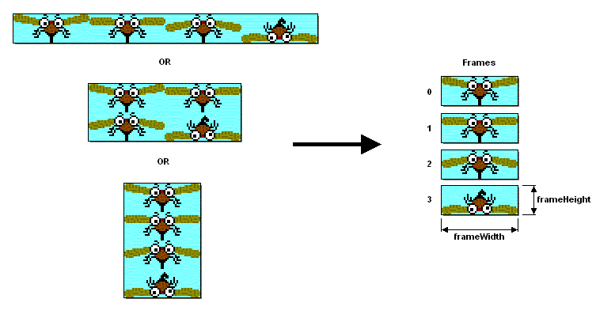
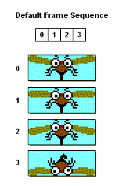
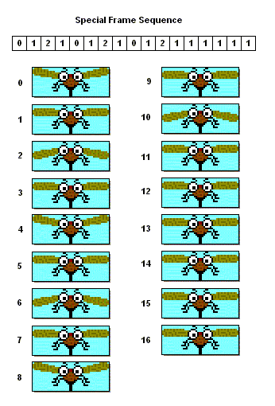
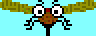
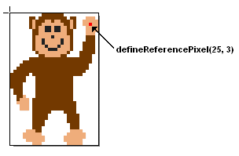
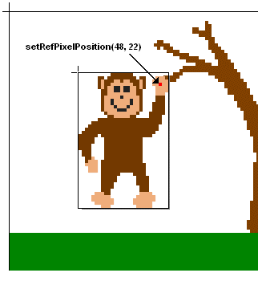
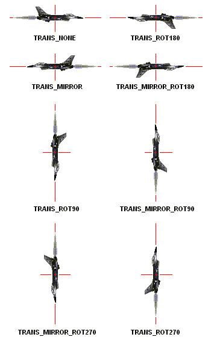
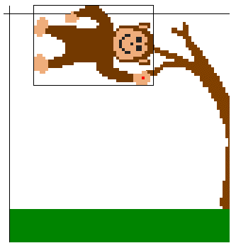

public class Sprite extends Layer

Each frame is assigned a unique index number. The frame located in the
upper-left corner of the Image is assigned an index of 0. The remaining
frames are then numbered consecutively in row-major order (indices are
assigned across the first row, then the second row, and so on). The method
getRawFrameCount() returns the total number of raw frames.

The developer must manually switch the current frame in the frame sequence.
This may be accomplished by calling setFrame(int),
prevFrame(), or nextFrame(). Note that these methods
always operate on the sequence index, they do not operate on frame indices;
however, if the default frame sequence is used, then the sequence indices
and the frame indices are interchangeable.
If desired, an arbitrary frame sequence may be defined for a Sprite. The frame sequence must contain at least one element, and each element must reference a valid frame index. By defining a new frame sequence, the developer can conveniently display the Sprite's frames in any order desired; frames may be repeated, omitted, shown in reverse order, etc.
For example, the diagram below shows how a special frame sequence might be used to animate a mosquito. The frame sequence is designed so that the mosquito flaps its wings three times and then pauses for a moment before the cycle is repeated.

nextFrame() each time the display is updated, the
resulting animation would like this:

setPosition(x,y),
getX(), and getY(). These methods all define
position in terms of the upper-left corner of the Sprite's visual bounds;
however, in some cases, it is more convenient to define the Sprite's position
in terms of an arbitrary pixel within its frame, especially if transforms
are applied to the Sprite.
Therefore, Sprite includes the concept of a reference pixel.
The reference pixel is defined by specifying its location in the
Sprite's untransformed frame using
defineReferencePixel(x,y).
By default, the reference pixel is defined to be the pixel at (0,0)
in the frame. If desired, the reference pixel may be defined outside
of the frame's bounds.
In this example, the reference pixel is defined to be the pixel that the monkey appears to be hanging from:

getRefPixelX() and getRefPixelY()
can be used to query the location of the reference pixel in the painter's
coordinate system. The developer can also use
setRefPixelPosition(x,y) to position the Sprite
so that reference pixel appears at a specific location in the painter's
coordinate system. These methods automatically account for any transforms
applied to the Sprite.
In this example, the reference pixel's position is set to a point at the end of a tree branch; the Sprite's location changes so that the reference pixel appears at this point and the monkey appears to be hanging from the branch:

setTransform(transform).

getRefPixelX() and
getRefPixelY() remain the same; however, the values returned by
getX() and getY() may change to reflect the
movement of the Sprite's upper-left corner.
Referring to the monkey example once again, the position of the reference pixel remains at (48, 22) when a 90 degree rotation is applied, thereby making it appear as if the monkey is swinging from the branch:

paint(Graphics) method.
The Sprite will be drawn on the Graphics object according to the current
state information maintained by the Sprite (i.e. position, frame,
visibility). Erasing the Sprite is always the responsibility of code
outside the Sprite class.
Sprites can be implemented using whatever techniques a manufacturers wishes to use (e.g hardware acceleration may be used for all Sprites, for certain sizes of Sprites, or not at all).
For some platforms, certain Sprite sizes may be more efficient than others; manufacturers may choose to provide developers with information about device-specific characteristics such as these.
| Modifier and Type | Field and Description |
|---|---|
static int |
TRANS_MIRROR
Causes the Sprite to appear reflected about its vertical
center.
|
static int |
TRANS_MIRROR_ROT180
Causes the Sprite to appear reflected about its vertical
center and then rotated clockwise by 180 degrees.
|
static int |
TRANS_MIRROR_ROT270
Causes the Sprite to appear reflected about its vertical
center and then rotated clockwise by 270 degrees.
|
static int |
TRANS_MIRROR_ROT90
Causes the Sprite to appear reflected about its vertical
center and then rotated clockwise by 90 degrees.
|
static int |
TRANS_NONE
No transform is applied to the Sprite.
|
static int |
TRANS_ROT180
Causes the Sprite to appear rotated clockwise by 180 degrees.
|
static int |
TRANS_ROT270
Causes the Sprite to appear rotated clockwise by 270 degrees.
|
static int |
TRANS_ROT90
Causes the Sprite to appear rotated clockwise by 90 degrees.
|
| Constructor and Description |
|---|
Sprite(Image image)
Creates a new non-animated Sprite using the provided Image.
|
Sprite(Image image,
int frameWidth,
int frameHeight)
Creates a new animated Sprite using frames contained in
the provided Image.
|
Sprite(Sprite s)
Creates a new Sprite from another Sprite.
|
| Modifier and Type | Method and Description |
|---|---|
boolean |
collidesWith(Image image,
int inp_x,
int inp_y,
boolean pixelLevel)
Checks for a collision between this Sprite and the specified Image
with its upper left corner at the specified location.
|
boolean |
collidesWith(Sprite s,
boolean pixelLevel)
Checks for a collision between this Sprite and the specified Sprite.
|
boolean |
collidesWith(TiledLayer t,
boolean pixelLevel)
Checks for a collision between this Sprite and the specified
TiledLayer.
|
void |
defineCollisionRectangle(int inp_x,
int inp_y,
int width,
int height)
Defines the Sprite's bounding rectangle that is used for collision
detection purposes.
|
void |
defineReferencePixel(int inp_x,
int inp_y)
Defines the reference pixel for this Sprite.
|
int |
getFrame()
Gets the current index in the frame sequence.
|
int |
getFrameSequenceLength()
Gets the number of elements in the frame sequence.
|
int |
getRawFrameCount()
Gets the number of raw frames for this Sprite.
|
int |
getRefPixelX()
Gets the horizontal position of this Sprite's reference pixel
in the painter's coordinate system.
|
int |
getRefPixelY()
Gets the vertical position of this Sprite's reference pixel
in the painter's coordinate system.
|
void |
nextFrame()
Selects the next frame in the frame sequence.
|
void |
paint(Graphics g)
Draws the Sprite.
|
void |
prevFrame()
Selects the previous frame in the frame sequence.
|
void |
setFrame(int inp_sequenceIndex)
Selects the current frame in the frame sequence.
|
void |
setFrameSequence(int[] sequence)
Set the frame sequence for this Sprite.
|
void |
setImage(Image img,
int frameWidth,
int frameHeight)
Changes the Image containing the Sprite's frames.
|
void |
setRefPixelPosition(int inp_x,
int inp_y)
Sets this Sprite's position such that its reference pixel is located
at (x,y) in the painter's coordinate system.
|
void |
setTransform(int transform)
Sets the transform for this Sprite.
|
getHeight, getWidth, getX, getY, isVisible, move, setPosition, setVisiblepublic static final int TRANS_NONE
0.public static final int TRANS_ROT90
5.public static final int TRANS_ROT180
3.public static final int TRANS_ROT270
6.public static final int TRANS_MIRROR
2.public static final int TRANS_MIRROR_ROT90
7.public static final int TRANS_MIRROR_ROT180
1.public static final int TRANS_MIRROR_ROT270
4.public Sprite(Image image)
new Sprite(image, image.getWidth(), image.getHeight())
By default, the Sprite is visible and its upper-left
corner is positioned at (0,0) in the painter's coordinate system.
image - the Image to use as the single frame
for the SpriteNullPointerException - if img is nullpublic Sprite(Image image, int frameWidth, int frameHeight)
frameWidth and
frameHeight. They may be laid out in the image
horizontally, vertically, or as a grid. The width of the source
image must be an integer multiple of the frame width, and the height
of the source image must be an integer multiple of the frame height.
The values returned by Layer.getWidth() and
Layer.getHeight() will reflect the frame width and frame height
subject to the Sprite's current transform.
Sprites have a default frame sequence corresponding to the raw frame
numbers, starting with frame 0. The frame sequence may be modified
with setFrameSequence(int[]).
By default, the Sprite is visible and its upper-left corner is positioned at (0,0) in the painter's coordinate system.
image - the Image to use for SpriteframeWidth - the width, in pixels, of the
individual raw framesframeHeight - the height, in pixels, of the
individual raw framesNullPointerException - if img is nullIllegalArgumentException - if frameHeight or
frameWidth is less than 1IllegalArgumentException - if the image
width is not an integer multiple of the frameWidthIllegalArgumentException - if the image
height is not an integer multiple of the frameHeightpublic Sprite(Sprite s)
All instance attributes (raw frames, position, frame sequence, current frame, reference point, collision rectangle, transform, and visibility) of the source Sprite are duplicated in the new Sprite.
s - the Sprite to create a copy ofNullPointerException - if s is nullpublic void defineReferencePixel(int inp_x,
int inp_y)
When a transformation is applied, the reference pixel is defined relative to the Sprite's initial upper-left corner before transformation. This corner may no longer appear as the upper-left corner in the painter's coordinate system under current transformation.
By default, a Sprite's reference pixel is located at (0,0); that is, the pixel in the upper-left corner of the raw frame.
Changing the reference pixel does not change the
Sprite's physical position in the painter's coordinate system;
that is, the values returned by getX() and
getY() will not change as a result of defining the
reference pixel. However, subsequent calls to methods that
involve the reference pixel will be impacted by its new definition.
inp_x - the horizontal location of the reference pixel, relative
to the left edge of the un-transformed frameinp_y - the vertical location of the reference pixel, relative
to the top edge of the un-transformed framesetRefPixelPosition(int, int),
getRefPixelX(),
getRefPixelY()public void setRefPixelPosition(int inp_x,
int inp_y)
inp_x - the horizontal location at which to place
the reference pixelinp_y - the vertical location at which to place the reference pixeldefineReferencePixel(int, int),
getRefPixelX(),
getRefPixelY()public int getRefPixelX()
defineReferencePixel(int, int),
setRefPixelPosition(int, int),
getRefPixelY()public int getRefPixelY()
defineReferencePixel(int, int),
setRefPixelPosition(int, int),
getRefPixelX()public void setFrame(int inp_sequenceIndex)
The current frame is rendered when paint(Graphics) is called.
The index provided refers to the desired entry in the frame sequence, not the index of the actual frame itself.
inp_sequenceIndex - the index of of the desired entry in the frame
sequenceIndexOutOfBoundsException - if frameIndex is
less than0IndexOutOfBoundsException - if frameIndex is
equal to or greater than the length of the current frame
sequence (or the number of raw frames for the default sequence)setFrameSequence(int[]),
getFrame()public final int getFrame()
The index returned refers to the current entry in the frame sequence, not the index of the actual frame that is displayed.
setFrameSequence(int[]),
setFrame(int)public int getRawFrameCount()
getFrameSequenceLength()public int getFrameSequenceLength()
getRawFrameCount()public void nextFrame()
The frame sequence is considered to be circular, i.e. if
nextFrame() is called when at the end of the sequence,
this method will advance to the first entry in the sequence.
setFrameSequence(int[]),
prevFrame()public void prevFrame()
The frame sequence is considered to be circular, i.e. if
prevFrame() is called when at the start of the sequence,
this method will advance to the last entry in the sequence.
setFrameSequence(int[]),
nextFrame()public final void paint(Graphics g)
Draws current frame of Sprite using the provided Graphics object.
The Sprite's upper left corner is rendered at the Sprite's current
position relative to the origin of the Graphics object. The current
position of the Sprite's upper-left corner can be retrieved by
calling Layer.getX() and Layer.getY().
Rendering is subject to the clip region of the Graphics object. The Sprite will be drawn only if it is visible.
If the Sprite's Image is mutable, the Sprite is rendered using the current contents of the Image.
paint in class Layerg - the graphics object to draw Sprite onNullPointerException - if g is nullpublic void setFrameSequence(int[] sequence)
All Sprites have a default sequence that displays the Sprites frames in order. This method allows for the creation of an arbitrary sequence using the available frames. The current index in the frame sequence is reset to zero as a result of calling this method.
The contents of the sequence array are copied when this method is called; thus, any changes made to the array after this method returns have no effect on the Sprite's frame sequence.
Passing in null causes the Sprite to revert to the
default frame sequence.
sequence - an array of integers, where each integer represents
a frame indexArrayIndexOutOfBoundsException - if seq is non-null and any member
of the array has a value less than 0 or
greater than or equal to the
number of frames as reported by getRawFrameCount()IllegalArgumentException - if the array has less than
1 elementnextFrame(),
prevFrame(),
setFrame(int),
getFrame()public void setImage(Image img, int frameWidth, int frameHeight)
Replaces the current raw frames of the Sprite with a new set of raw
frames. See the constructor Sprite(Image, int, int) for
information on how the frames are created from the image. The
values returned by Layer.getWidth() and Layer.getHeight()
will reflect the new frame width and frame height subject to the
Sprite's current transform.
Changing the image for the Sprite could change the number of raw frames. If the new frame set has as many or more raw frames than the previous frame set, then:
setFrameSequence(int[])), it will remain unchanged. If no
custom frame sequence is defined (i.e. the default frame
sequence
is in use), the default frame sequence will be updated to
be the default frame sequence for the new frame set. In other
words, the new default frame sequence will include all of the
frames from the new raw frame set, as if this new image had been
used in the constructor.
If the new frame set has fewer frames than the previous frame set, then:
The reference point location is unchanged as a result of calling this method, both in terms of its defined location within the Sprite and its position in the painter's coordinate system. However, if the frame size is changed and the Sprite has been transformed, the position of the Sprite's upper-left corner may change such that the reference point remains stationary.
If the Sprite's frame size is changed by this method, the collision rectangle is reset to its default value (i.e. it is set to the new bounds of the untransformed Sprite).
img - the Image to use for
SpriteframeWidth - the width in pixels of the individual raw framesframeHeight - the height in pixels of the individual raw framesNullPointerException - if img is nullIllegalArgumentException - if frameHeight or
frameWidth is less than 1IllegalArgumentException - if the image width is not an integer
multiple of the frameWidthIllegalArgumentException - if the image height is not an integer
multiple of the frameHeightpublic void defineCollisionRectangle(int inp_x,
int inp_y,
int width,
int height)
inp_x - the horizontal location of the collision
rectangle relative to the untransformed Sprite's left edgeinp_y - the vertical location of the collision rectangle relative to
the untransformed Sprite's top edgewidth - the width of the collision rectangleheight - the height of the collision rectangleIllegalArgumentException - if the specified
width or height is
less than 0public void setTransform(int transform)
TRANS_NONE.
Since some transforms involve rotations of 90 or 270 degrees, their
use may result in the overall width and height of the Sprite
being swapped. As a result, the values returned by
Layer.getWidth() and Layer.getHeight() may change.
The collision rectangle is also modified by the transform so that it remains static relative to the pixel data of the Sprite. Similarly, the defined reference pixel is unchanged by this method, but its visual location within the Sprite may change as a result.
This method repositions the Sprite so that the location of
the reference pixel in the painter's coordinate system does not change
as a result of changing the transform. Thus, the reference pixel
effectively becomes the centerpoint for the transform. Consequently,
the values returned by getRefPixelX() and getRefPixelY()
will be the same both before and after the transform is applied, but
the values returned by getX() and getY()
may change.
transform - the desired transform for this SpriteIllegalArgumentException - if the requested
transform is invalidTRANS_NONE,
TRANS_ROT90,
TRANS_ROT180,
TRANS_ROT270,
TRANS_MIRROR,
TRANS_MIRROR_ROT90,
TRANS_MIRROR_ROT180,
TRANS_MIRROR_ROT270public final boolean collidesWith(Sprite s, boolean pixelLevel)
If pixel-level detection is used, a collision is detected only if opaque pixels collide. That is, an opaque pixel in the first Sprite would have to collide with an opaque pixel in the second Sprite for a collision to be detected. Only those pixels within the Sprites' respective collision rectangles are checked.
If pixel-level detection is not used, this method simply checks if the Sprites' collision rectangles intersect.
Any transforms applied to the Sprites are automatically accounted for.
Both Sprites must be visible in order for a collision to be detected.
s - the Sprite to test for collision withpixelLevel - true to test for collision on a
pixel-by-pixel basis, false to test using simple
bounds checking.true if the two Sprites have collided, otherwise
falseNullPointerException - if Sprite s is
nullpublic final boolean collidesWith(TiledLayer t, boolean pixelLevel)
If pixel-level detection is not used, this method simply checks if the Sprite's collision rectangle intersects with a non-empty cell in the TiledLayer.
Any transform applied to the Sprite is automatically accounted for.
The Sprite and the TiledLayer must both be visible in order for a collision to be detected.
t - the TiledLayer to test for collision withpixelLevel - true to test for collision on a
pixel-by-pixel basis, false to test using simple bounds
checking against non-empty cells.true if this Sprite has
collided with the TiledLayer, otherwise
falseNullPointerException - if t is nullpublic final boolean collidesWith(Image image, int inp_x, int inp_y, boolean pixelLevel)
If pixel-level detection is not used, this method simply checks if the Sprite's collision rectangle intersects with the Image's bounds.
Any transform applied to the Sprite is automatically accounted for.
The Sprite must be visible in order for a collision to be detected.
image - the Image to test for collisioninp_x - the horizontal location of the Image's
upper left cornerinp_y - the vertical location of the Image's
upper left cornerpixelLevel - true to test for collision on a
pixel-by-pixel basis, false to test using simple
bounds checkingtrue if this Sprite has
collided with the Image, otherwise
falseNullPointerException - if image is
nullCopyright © 2013 Sun Microsystems, Inc. and Motorola, Inc. All rights reserved.
Use is subject to License Terms. Your use of this web site or any of its contents or software indicates your agreement to be bound by these License Terms.